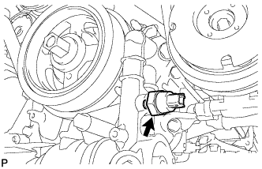

OIL PRESSURE SWITCH > REMOVAL |
| 1. REMOVE LOWER FRONT BUMPER COVER |
Remove the clip, 5 bolts and lower front bumper cover.
| 2. REMOVE NO. 1 ENGINE UNDER COVER SUB-ASSEMBLY |
Remove the 4 bolts.
 |
Unhook the No. 1 engine under cover from the vehicle body as shown in the illustration.
| 3. REMOVE ENGINE OIL PRESSURE SWITCH ASSEMBLY |
Disconnect the oil pressure switch connector.
|  |
Remove the oil pressure switch.